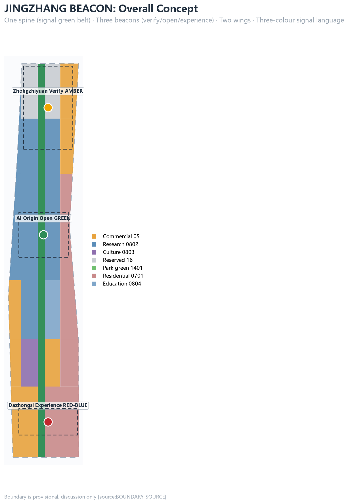
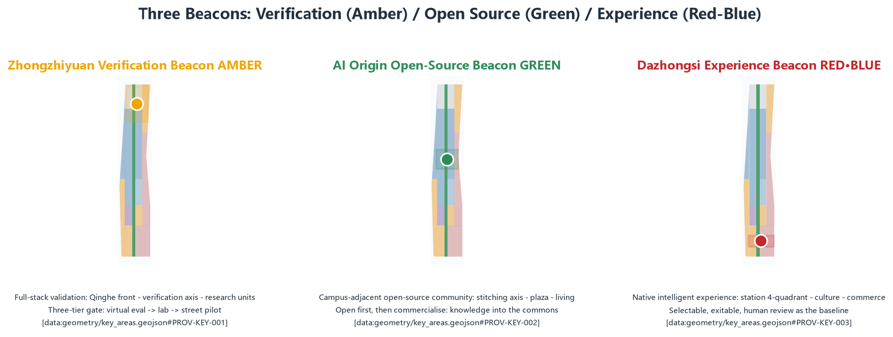
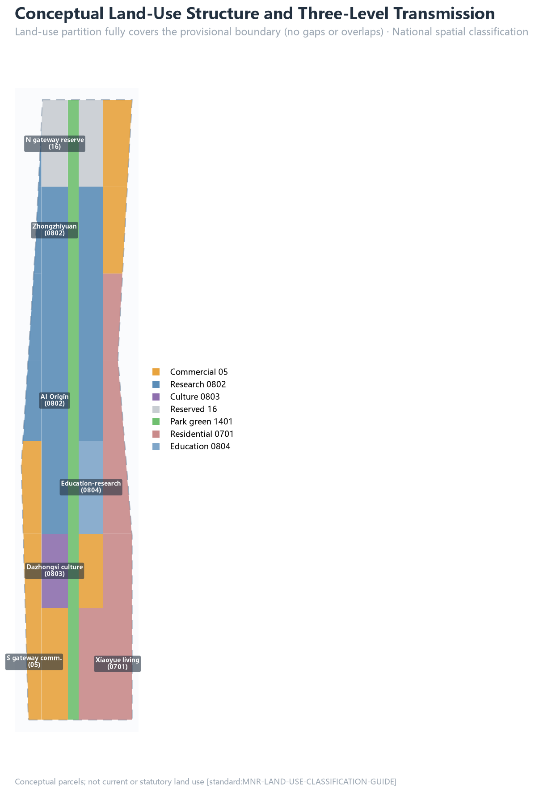
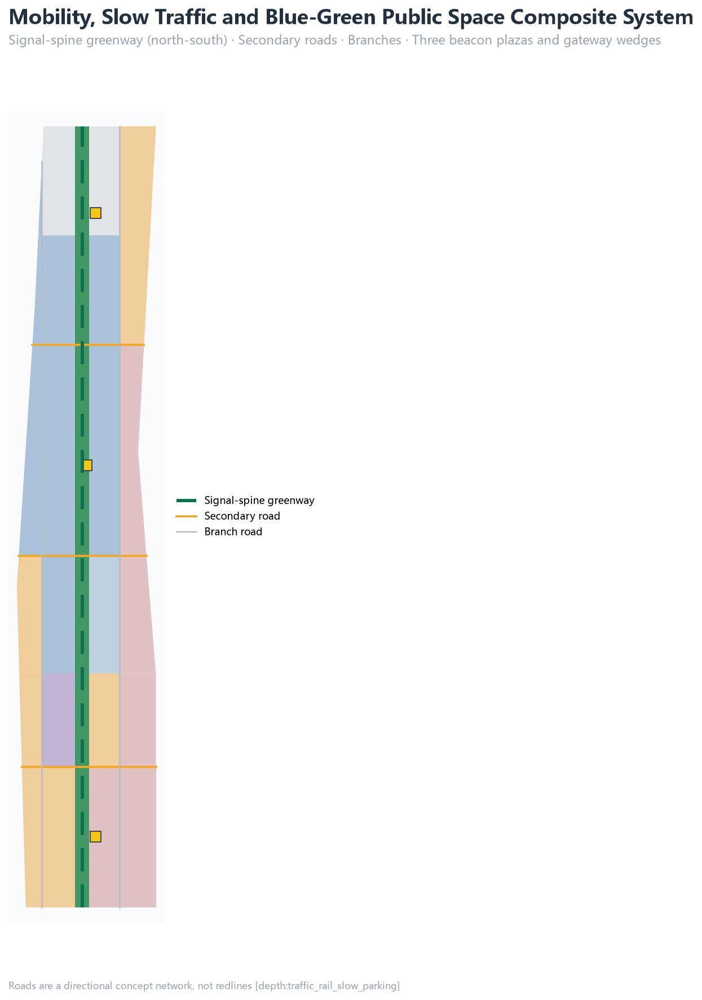

Taking the signalling system of the century-old Jing-Zhang Railway as its prototype: Green = experienceable, Amber = controlled testing, Red = retired and rolled back. A one-spine, three-beacon, two-wing spatial structure turns AI governance principles into a street-level, verifiable and reversible public interface. All spatial layouts and activities are open co-creation concept suggestions; they do not replace statutory planning or constitute government-approved conclusions.


AI ecosystem and future urban form: a "source - verify - open - experience - govern" signal chain, the three-areas-two-wings loop, and a global AI events system.
Land useMobilityBlue-green space
Industrial space, urban renewal, transport and character mapped into layers: 35 land-use units fully cover the provisional boundary; the signal-spine green belt runs north-south; buildings, roads, green space and phasing express design intent.
Land useBuildingsRenewal projects
Three key areas reach detailed-design depth: Zhongzhiyuan verification beacon (amber), AI Origin open-source beacon (green), Dazhongsi experience beacon (red-blue), each with positioning, spatial moves, AI scenarios and implementation dependencies.
Key areasAI scenarios
Full-stack autonomy validation area: Qinghe waterfront - verification axis - research units; three-tier verification gate (virtual evaluation → controlled laboratory → street pilot); model evaluation/red-team sandbox, full-stack controlled trial, city-agent public audit desk.
Test/validationFull-stack autonomy
Campus-adjacent open-source community: campus-park stitching axis - open-source plaza - living parcels; open-source release hall, campus-adjacent translation street; "open first, then commercialise" - public knowledge enters the commons and outputs return under licence.
Open sourceCommercialisation
Native intelligent experience area: station four-quadrant - cultural experience parcels - commercial service ring; international pitch lounge, data-element meeting lounge, AI living-service model street; every experience is "selectable and exitable".
Native intelligent consumptionStation-city integration
| No. | Scenario card | Signal |
|---|---|---|
| SC-01 | Open-source release hall (AI Origin) | Green |
| SC-02 | Model evaluation & red-team sandbox (Zhongzhiyuan) | Amber · test |
| SC-03 | Edge compute depot (signal spine) | Green |
| SC-04 | AI slow-traffic navigation (signal-spine greenway) | Green |
| SC-05 | Dazhongsi international pitch lounge | Green |
| SC-06 | Qinghe low-carbon innovation corridor (Zhongzhiyuan) | Amber |
| SC-07 | Campus-adjacent translation street (AI Origin) | Green |
| SC-08 | Data-element meeting lounge (Dazhongsi) | Amber |
| SC-09 | AI living-service model street | Green |
| SC-10 | Global AI Week route | Green |
| SC-11 | Full-stack model controlled trial (Zhongzhiyuan) | Amber · test |
| SC-12 | City-agent public audit desk (Zhongzhiyuan) | Amber/Red · test |
| Persona | Spatial response |
|---|---|
| Open-source developer | Origin open-source plaza, public code wall, night collaboration space |
| Startup and research team | Zhongzhiyuan shared testing field, edge compute service point, verification gate |
| Headline enterprise & international visitor | Station-front composite interface, beacon plaza, international pitch lounge |
| Surrounding resident | Signal-spine slow loop, embedded community services, graded events |
| University faculty and student | Campus-park stitching, translation street, AI education experience point |


| No. | Project | Type | Phase |
|---|---|---|---|
| JZ-01 | Signal-spine slow-traffic gap stitching | Public space/transport | Near term |
| JZ-02 | Zhongzhiyuan Qinghe low-carbon innovation front | Blue-green/industry display | Near term |
| JZ-03 | Origin campus-adjacent translation street | Renewal/industry service | Near term |
| JZ-04 | Dazhongsi station four-quadrant walking continuity | Transit integration/slow traffic | Mid term |
| JZ-05 | Three beacon plazas implementation | Public space/brand | Mid term |
| JZ-06 | AI public service and edge compute nodes | New infrastructure/public service | Mid term |
| JZ-07 | Global AI Week public route | Operation/brand | Long term |
PASS DETERMINISTIC_VALIDATION: CI validation passed
PASS BOUNDARY_TRUST: provisional boundary labelled
PASS KEY_AREAS_TRUST: three provisional key areas disclosed
PASS SPATIAL_REVIEW: topology, coverage, containment passed
PASS LAND_USE_TOPOLOGY: full coverage, no overlap
PASS VISUAL_STATIC: offline static HTML, no remote resources
PASS PROFESSIONAL_EVIDENCE: standards, depth, geometry, metrics referenced